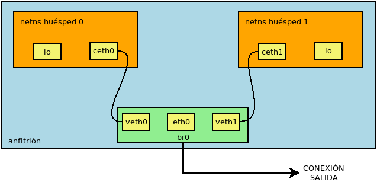

9.2.2.2.1.1.1. Contenedores privilegiados¶
Dedicaremos este epígrafe a la gestión de contenedores privilegiados creados y gestionados por el propio administrador[1] y, conocidos estos, introduciremos en el próximo la dificultad de crear contenedores no privilegiados con un usuario normal.
9.2.2.2.1.1.1.1. Preliminares¶
Al disponer de paquete en Debian, su instalación es sencilla:
$ apt install lxc
Comencemos aclarando, sin embargo, algunas particularidades que nos ayudarán a entender el desarrollo posterior:
El demonio lxc-net gestiona la creación de interfaces puentes (que se estudiarán bajo el epígrafe dedicado a la red) y, como hace libvirtd, proporciona direcciones IP dinámicas valiéndose de dnsmasq.
Los contenedores contienen un conjunto de archivos y directorios que constituyen el sistema de archivos del sistema huésped. Por tanto, cada contenedor recreará una estructura típica de directorios (
/bin,/etc,/usr, etc) que variará según sea la distribución que el huésped imita.Para construir este árbol de directorios, LXC proporciona una serie de plantillas predefinidas.
Al crear un contenedor con una de ellas, la plantilla se descargará y se ejecutará un script que preparará el contenedor utilizando la configuración local y la información de la plantilla. Las plantillas se almacenan en principio en
/var/cache/lxc, aunque pueden borrarse posteriormente sin escrúpulo.A diferencia de QEmu o Virtualbox, no existe un archivo de disco (QCOW2, VDI) que contenga un sistema de archivos totalmente ajeno al anfitrión, sino que el contenido del contenedor son archivos y directorios incluidos en una parte del árbol de directorios del anfitrión (por defecto,
/var/lib/lxc/nombre_contenedor). Esto supone que LXC actúe dependiendo de cuál sea el sistema de archivos sobre el que se encuentra esa parte del árbol, esto es, dependiendo de cuál sea el formato de su almacenamiento (backing store en su terminología):- «none» (o también «dir»)
este formato es el que se presenta cuando los archivos del contenedor los trata como archivos sin más consideración. Por ejemplo, si el sistema de archivos del anfitrión es ext4 y
/var/lib/lxcforma parte de este sistema de archivos, no habrá más remedio que usar este formato. No es lo más apropiado, desde luego:Las instantáneas consisten en hacer una copia completa de todos los archivos.
No hay forma de limitar el tamaño del contenedor y, si
/var/lib/lxcno constituye un sistema de archivos aparte, los contenedores pueden crecer hasta ocupar todo el espacio disponible de/.
- «btrfs»/«zfs»
Si
/var/lib/lxcse encuentra en un sistema de archivos BTRFS o ZFS (p.e. porque hayamos dispuesto esa ruta en partición aparte y le hayamos dado formato con alguno de estos dos sistemas), entonces podremos informar a LXC de que puede hacer uso de sus características especiales (p.e. soporte nativo para instantáneas, subvolúmenes). Por sus posibilidades, es la opción más conviente.- «lvm»
Podemos optar por incluir cada contenedor en un volumen lógico de LVM. LVM soporta instantáneas y, si utilizamos aprovisionamiento fino, las ventajas se multiplican.
- «loop»
Este es el formato más cercano al estilo de las dos virtualizaciones completas que hemos citados anteriormente: los archivos del contenedor se guardaran dentro de un archivo regular del anfitrión (
/var/lib/lxc/nombre_contenedor/rootdev).
9.2.2.2.1.1.1.2. Creación¶
Para la creación de un contenedor tenemos que tener presente de inicio dos aspectos: qué sistema Linux queremos incluir y cuál será el formato de almacenamiento. Existe otro más (la limitación de recursos), pero lo trataremos más adelante. Comencemos, pues, por lo más sencillo:
# lxc-create -n test -t download -- -d alpine -r 3.17 -a amd64
donde hay que notar:
Somos el administrador.
Nuestro contenedor se llamará «test».
Hacemos la instalación a través de una plantilla llamada download que facilita la operación y nos permite seleccionar de forma sencilla una de las imágenes disponibles en los servidores. Sin añadir más, la imagen ejecuta un script que nos muestra y, a continuación, nos permite seleccionar cuál es la plantilla que deseamos utilizar, pero…
Tras -- se pueden incluir las opciones que permita la plantilla (en este caso, download). Pues bien, si observamos la lista de plantillas veremos que cada una se define por cuatro características: distribución (-d), versión (-r), arquitectura (-a) y variante (-v), que son precisamente las opciones que permite añadir download para restringir la lista de selección que nos muestra. Así, si incluyéramos únicamente
-a amd64aparecerían sólo las plantillas para esta arquitectura. Si añadimos las opciones suficientes como para restringir la lista a una sola plantilla, entonces la instalación se realizará inmediatamente sin más preguntas. Esto es precisamente lo que logra la orden de arriba, porque aunque falta especificar la variante, cuando esta no se indica, se entiende que es «default».
Por tanto, hemos instalado una distribución la variante default de la versión 3.17 de Alpine para arquitectura x64_64[2].
Ahora bien, ¿qué pasa con el segundo aspecto, esto es, el formato de
almacenamiento? El formato se introduce con la opción -B antes de
--, puesto que es algo que nada tiene que ver con la plantilla que se
use. Cuando no se especifica nada, lxc-create entiende -B
none (o -B dir, que es lo mismo) y, por tanto, LXC entenderá que
nuestro contenedor es una mera colección de archivos y directorios sin nada
especial de lo que pueda aprovecharse. La traducción de esto es que se habrá
creado lo siguiente:
/var/lib/lxc
+-- test
+---- config
+---- rootfs/
+-- ...
+-- Estructura de directorios de Alpine
+-- ...
O sea, un directorio dentro de /var/lib/lxc cuyo nombre coincide con el
nombre del contenedor que, a su vez, contiene:
Un directorio que incluye la estructura de archivos del contenedor (
rootfs). Cuando entremos en el huésped, nos encontraremos enjaulados dentro de él.Un archivo (
config) con la configuración del contenedor para la que se toma como referencia la que se encuentra en/etc/lxc/default.conf.
Probemos crear con otro formato:
# lxc-destroy -n test # Primero borramos el anterior
# lxc-create -n test -t download -B loop --fssize=50M -- -d alpine -r 3.17 -a amd64
La orden es idéntica a la anterior, pero hemos añadido las opciones para que el
almacenamiento sea un único archivo (-B loop). LXC crea un archivo,
pero ¿de qué tamaño y con qué sistema de archivos lo formatea? Para el tamaño
existe la opción --fssize, que sí se ha indicado porque lo predeterminado
es 1GiB y nosotros no necesitamos tanto para una minidistribución. El sistema de
archivos se especifica con --fstype y su valor predeterminado es ext4.
Si gulismeamos nos encontraremos lo siguiente:
/var/lib/lxc
+-- test
+---- config
+---- rootdev [Aquí dentro está nuestra Alpine]
+---- rootfs/
La estructura es semejante, pero ahora rootfs está vacío, puesto que es
el archivo rootdev el que contiene dentro de sí toda la estructura de
directorios. En este caso, cuando arranquemos el contenedor, LXC montará el
contenido de rootdev sobre rootfs. También es preciso notar que,
si el sistema de archivos lo soporta, el archivo rootdev es un
archivo disperso como el que podemos crear nosotros con truncate,
por lo que inicialmente no ocupará todo el tamaño que le asignamos, e irá
creciendo según añadamos contenido.
Si /var/lib/lxc se encuentra en un sistema de archivos BTRFS, podremos
indicarle a LXC que lo tenga en cuenta. Sin embargo, para ello deberemos
tener antes instalado:
# apt install btrfs-progs
Ahora sí, procedamos:
# lxc-destroy -n test
# lxc-create -n test -t download -B btrfs -- -d alpine -r 3.17 -a amd64
En principio, no observaremos diferencias respecto a no especificar formato (la estructura de archivos es idéntica), pero existen. De hecho:
# btrfs subvolume list /var/lib/lxc
ID 258 gen 102 top level 5 path test/rootfs
LXC ha definido un subvolumen para la estructura de directorios del contenedor. Esta es la clave que permite luego crear instantáneas o limitar el espacio de disco del contenedor.
Nota
Con ZFS ocurre algo similar.
Por último, podemos escoger como formato de almacenamiento LVM. Para ello es obvio que necesitamos disponer de un grupo de volúmenes (al que llamaremos VGtest) y, aunque no es extrictamente necesario, supondremos que dentro de él también tenemos un pool llamado lxc para aprovisionamiento fino[3]. En estas circunstancias, podemos crear un contenedor así:
# lxc-destroy -n test
# lxc-create -n test -t download -B lvm --vgname VGtest --thinpool lxc --fssize=50M -- -d alpine -r 3.17 -a amd64
Esto supone que dentro del pool VGtest/lxc se cree un volumen lógico
de 50 MiB (--fssize) para albergar el contenedor. El nombre del volumen
lógico se toma del nombre del contenedor. Por tanto, si consultamos los
volúmenes existentes:
# lvs
LV VG Attr LSize Pool Origin Data% Meta% Move Log Cpy%Sync Convert
home VGraid Vwi-aotz-- 500,00m lxc 6,45
log VGraid -wi-ao---- 64,00m
lxc VGraid twi-aotz-- 768,00m 12,59 12,40
mysql VGraid Vwi-aotz-- 500,00m lxc 6,41
raiz VGraid -wi-ao---- 1,75g
srv VGraid Vwi-aotz-- 500,00m lxc 6,41
swap VGraid -wc-ao---- 32,00m
test VGraid Vwi-aotz-- 50,00m lxc 3,14
Como no hemos especificado sistema de archivos (--fstype), el volumen lógico se formatea en ext4. La orden crea un estructura como la anterior:
/var/lib/lxc
+-- test
+---- config
+---- rootfs/
pero rootfs se encontrará vacío puesto los archivos del contenedor se
encuentran en el volumen lógico.
Nota
Como lo habitual es que tanto el grupo de volúmenes como el pool
sean siempre los mismos, es posible definir un archivo
/etc/lxc/lxc.conf donde se definan estos nombres a fin de no tener
que repetirlos constantemente al crear contenedores (véase
lxc.system.conf para más información).
9.2.2.2.1.1.1.3. Manejo¶
Una vez usado lxc-create, se creará el contenedor:
# lxc-ls
test
pero se encontrará parado, lo cual puede comprobarse añadiendo la opción -f:
# lxc-ls -f
NAME STATE AUTOSTART GROUPS IPV4 IPV6 UNPRIVILEGED
test STOPPED 0 - - - false
o bien, lxc-info:
# lxc-info -n test
Name: test
State: STOPPED
Para arrancar el contenedor es preciso:
# lxc-start -n test
lo cual cambia el estado del contenedor:
# lxc-ls -f
NAME STATE AUTOSTART GROUPS IPV4 IPV6 UNPRIVILEGED
test RUNNING 0 - 10.0.3.108 - false
# lxc-info -n test
Name: test
State: RUNNING
PID: 3156
IP: 10.0.3.108
Link: vethL6i8cY
TX bytes: 2.09 KiB
RX bytes: 2.56 KiB
Total bytes: 4.65 KiB
Esta orden lo arranca, pero por defecto lo deja en segundo plano[4], por lo que tendremos que conectarnos al contenedor. La manera fetén de hacerlo es utilizando la orden lxc-console que nos presentará un login de acceso. Sin embargo, ¿cuál es la contraseña? Lo primero, pues, es preparar el acceso para que nos sea posible. Para ello disponemos de lxc-attach, que permite ejecutar directamente órdenes dentro del contenedor, así que podemos empezar por ponerle una contraseña al administrador:
# lxc-attach -n test -- passwd
Advertencia
En otras distribuciones bastará con esto, pero en el caso
particular de Alpine, seguiremos teniendo problemas de acceso, porque en
ella, cuando se accede como administrador, se consulta securetty
para comprobar si la consola de acceso es considerada segura y las que usamos
con lxc-console (/dev/lxc/tty1, /dev/lxc/tty2,
etc.) no están. Podemos optar por crear un usuario sin privilegios (y ya en
el contenedor convertirnos en administrador con su):
# lxc-attach -n test -- adduser -s /bin/ash -g "" usuario
o eliminar el archivo /etc/securetty para evitar la comprobación:
# lxc-attach -n test -- mv /etc/securetty /etc/securetty.move
Hecho lo cual, podremos ingresar en el contenedor:
# lxc-console -n test
Connected to tty 1
Type <Ctrl+a q> to exit the console, <Ctrl+a Ctrl+a> to enter Ctrl+a itself
Welcome to Alpine Linux 3.17
Kernel 5.10.0-19-amd64 on an x86_64 (/dev/tty1)
test login: root
Password:
[...]
test:~# _
Obsérvese, cómo se nos advierte de que para salir de la consola (que es la 1) podemos teclear Ctrl-A+q. Esto se debe a que si cerramos la sesión (por ejemplo, con exit), se nos volverá a pedir el login como ocurre en un sistema habitualmente; y. si optamos por apagar (poweroff). lo que lograremos es apagar el sistema huésped, o sea, parar el contenedor. La combinación de teclas nos permite desconectarnos del huésped para volver al sistema anfitrión. Posteriormente, podremos volver a conectarnos con:
# lxc-console -n test -t1
donde especificamos el número de consola a la que queremos conectar para evitar que lxc-console pueda escoger una distinta[5]. También es útil tener presente que es posible cambiar la tecla de control por si Ctrl+A, ya la usamos para algo especial en el anfitrión (p.e. porque usemos screen):
# lxc-console -e '^k' -n test
Nota
El gorrito (^) se ha escrito literalmente.
Ya sólo nos queda saber cómo parar y eliminar el contenedor. Lo primero se logra bien apagando el contenedor desde el propio huésped (p.e. con poweroff) como ya hemos visto, o bien desde el anfitrión utilizando la orden:
# lxc-stop -n test
Una vez que hayamos parado el contenedor, podremos eliminarlo con:
# lxc-destroy -n test
9.2.2.2.1.1.1.4. Limitación¶
Al tratar de limitar recursos tenemos que distinguir entre limitar el espacio de disco, que es algo que dependerá del formato de almacenamiento, y limitar el resto de recursos (RAM, CPU, etc) que depende de cgroups.
Espacio de disco
Dos de los formatos que hemos revisado (loop y
lvm) ya limitan per se el tamaño del contenedor por
vía de la opción --fssize. none, por su parte,
es incapaz de fijar una limitación, puesto que los archivos irán creciendo
mientras haya espacio disponible dentro del sistema de archivos en el que se
encuentre /var/lib/lxc. Por tanto, esta exposición se reduce a conocer
cómo limitarlo con brtfs y (zfs). En ambos casos, la limitación se fija haciendo uso de las
herramientas propias del sistema de archivos y no del propio LXC, así que es
más un problema de conocer tal sistema de archivos que de conocer esta
tecnología de contenedores. Estudiemos cómo hacerlo con BTRFS.
Ya se adelantó que al crear un contenedor sobre un sistema BTRFS (e indicarle
con :B btrfs que así es), se crea automáticamente un subvolumen para el
contenido del contenedor:
# btrfs subvolume list /var/lib/lxc
ID 258 gen 102 top level 5 path test/rootfs
Pues bien, para poder limitar el espacio que ocupará este subvolumen, necesitamos habilitar las cuotas en el sistema de archivos:
# btrfs quota enable /var/lib/lxc
y establecer una cuota para el subvolumen:
# btrfs qgroup limit 50m /var/lib/lxc/test/rootfs
con lo cual:
# btrfs qgroup show -r /var/lib/lxc
qgroupid rfer excl max_rfer
-------- ---- ---- --------
0/5 16.00KiB 16.00KiB none
0/258 9.65MiB 9.65MiB 50.00MiB
Y, efectivamente, si intentamos dentro del huésped escribir 50MiB:
test:~$ dd < /dev/zero > ceros bs=1M count=50
dd: error writing 'standard output': Quota exceeded
41+0 records in
40+0 records out
seremos incapaces de completar la operación, porque ya había más de 9MiB ocupados por la propia Alpine.
Podemos redefinir cualquier otro valor para la cuota y, si decidimos eliminarla, basta con usar la palabra none:
# btrfs qgroup limit none /var/lib/lxc/test/rootfs
Otros recursos
El resto de recursos (p.e. la memoria RAM) se limitan haciendo uso de cgroups. Las modernas versiones de Debian (a partir de Bullseye) usan v2, así que sobre esta segunda versión es sobre la que trabajaremos. En principio, no hay definida ninguna limitación, así que si sobre mi sistema de 512MiB, entro al contenedor y consulto la memoria disponible:
test:~$ grep ^MemT /proc/meminfo
MemTotal: 484704 kB
obtendremos más o menos esa cantidad de memoria disponible. ¿Cómo establecer las limitaciones? Para ello debemos hacer uso de lxc-cgroups (con la contenedor arrancado) y saber qué controlador debemos tocar:
# lxc-groups -n test memory.max 100m
# lxc-groups -n test memory.swap.max 25m
# lxc-cgroup -n test cpuset.cpus 0,2
Estos, por ejemplo, limitan la RAM, la swap y el uso de la CPU a solamente al primero y tercero de los núcleos. Podemos comprobar estos límites consultando:
# cat /sys/fs/cgroup/lxc.payload.test/memory.max
104857600
o sea, 10MiB expresados en bytes. Los límites, sin embargo, son efímeros y se
perderán al apagar la máquina. Para hacerlos permanentes, pueden añadirse al
archivo de configuración del contenedor (en este caso,
/var/lib/lxc/test/config):
lxc.cgroup2.memory.max = 100m
lxc.cgroup2.memory.swap.max = 25m
lxc.cgroup2.cpuset.cpus = 0,2
Por hacer
free, sin embargo, devuelve datos del anfitrión. Debe de ser algo relacionado con el servicio lxcfs. Debe comprobarse si se mantiene este problema con LXD.
9.2.2.2.1.1.1.5. Copias¶
La copia de un contenedor proporciona, en general, un nuevo contenedor independiente. La herramienta para llevarla a cabo es lxc-copy, y su sintaxis no depende de cuál sea el formato de almacenamiento, aunque los detalles de cada uno nos pueden resultar interesante. Por tanto, introduciremos primero su uso y, ya conocido, estudiaremos cómo se comporta con cada uno de los formatos.
La creación de un nuevo contenedor a partir de otro ya existente es bastante sencilla:
# lxc-copy -n test -N copiatest
# lxc-ls -fF name,state
NAME STATE
copiatest STOPPED
test STOPPED
Con ello tendremos dos contenedores distintos, aunque exactamente iguales, que podrán usarse simultáneamente y divergir a partir de ahora. Ambos, además, tendrán el mismo formato de almacenamiento.
- none
Internamente lo que ocurre es que se hace una copia simple de los contenidos del contenedor, por lo que ocuparemos el doble de espacio. Sin embargo, este formato, permite al hacer una copia la inclusión de la opción -s (de snapshot):
# lxc-copy -n test -s -N copiatest
En este caso, el contenedor resultante depende de la existencia del original:
# ls -1 /var/lib/lxc/copiatest/ config lxc_rdepends overlay rootfs # grep rootfs /var/lib/lxc/copiatest/config lxc.rootfs.path = overlay:/var/lib/lxc/test/rootfs:/var/lib/lxc/copiatest/overlay/delta
ya que se utiliza overlayfs (un sistema de archivos de unión) para constituirse. Por ello, el nuevo contenedor toma como base el antiguo y solamente contiene las diferencias respecto a éste. Téngase en cuenta que si se manipula el contenedor original, tales manipulaciones también se reflejan en el nuevo contenedor, por lo que debería evitarse su ejecución.
Nota
Observe que hacer esto es equivalente a crear un disco derivado QCOW2, o en Virtualbox definir un disco VDI como de multiconexión.
- loop
La copia del contenedor con este formato:
# lxc-copy -n test -N copiatest
crea un contenedor independiente cuyo formato es también loop:
# lxc-ls -1 copiatest test # ls -1 /var/lib/lxc/copiatest/ config rootdev rootfs # grep rootfs /var/lib/lxc/copiatest/config lxc.rootfs.path = loop:/var/lib/lxc/copiatest/rootdev
Este formato no soporta la opción -s.
Advertencia
lxc-copy es un comando mudito y deja de mostrar errores cuando estos se producen, a menos que modifiquemos el nivel de los mensajes. Es el caso de intentar añadir la opción -s a la copia de un contenedor con este formato:
# lxc-copy -n test -s -N copiatest $ echo $? 1
y habrá que añadirle la opción -l para que lo haga:
# lxc-copy -l info -n test -s -N copiatest lxc-copy: test: storage/loop.c: loop_clonepaths: 45 The loop storage driver does not support snapshots lxc-copy: test: storage/storage.c: storage_copy: 412 Failed creating new paths for clone of "/var/lib/lxc/test/rootdev" lxc-copy: test: lxccontainer.c: copy_storage: 3586 Error copying storage. lxc-copy: test: tools/lxc_copy.c: do_clone: 358 Failed to clone
- LVM
La copia, simplemente, crea otro volumen lógico. No soporta la opción -s.
- BTRFS
Se añade o no la opción -s obra de un mismo modo: crea un nuevo subvolumen para el nuevo contenedor que es una instantánea del contenedor original:
# lxc-copy -n test -N copiatest # btrfs subvolume list -s /var/lib/lxc # -s lista sólo subvolúmenes que sean instantáneas ID 269 gen 314 cgen 313 top level 5 otime 2023-01-13 19:54:20 path copiatest/rootfs
lo cual supone que, de principio, no ocupen apenas espacio adicional de disco.
Nota
Si el subvolumen asociado al contenedor tiene definido un límite de cuota, el subvolumen del nuevo contenedor también tendrá definido ese mismo límite.
9.2.2.2.1.1.1.6. Instantáneas¶
Las instantáneas (como en el caso de las herramientas de virtualización completa) permiten guardar un estado determinado del contenedor a fin de poder recuperarlo en el futuro. En este caso, la herramienta es lxc-snapshot:
# lxc-snapshot -n test
Esto genera propiamente una instantánea (por eso no tiene nombre propio), no un nuevo contenedor, que se almacena dentro del propio directorio de «test»:
# lxc-ls
test
# lxc-snapshot -n test -L
snap0 (/var/lib/lxc/test/snaps) 2023:01:13 09:29:44
Obviamente, podremos seguir modificando el contenedor con la seguridad de poder regresar al estado en que sehizo la instantánea:
# lxc-start -n test
# lxc-attach -n test -- touch /root/saludo.txt
# lxc-attach -n test -- ls /root/
saludo.txt
# lxc-stop -n test
Y si ahora queremos revertir los cambios:
# lxc-snapshot -n test -r snap0
el contenedor volverá al estado en que se encontraba al realizar la instantánea:
# lxc-start -n test
# lxc-attach -n test -- ls /root/
# lxc-stop -n test
Las instantáneas, por supuesto, pueden borrarse:
# lxc-snapshot -n test -d snap0
# lxc-snapshot -n test -L
No snapshots
- none
La instantánea no es más que una copia simple del contenido del contenedor. Por tanto, duplicaremos la ocupación del disco.
- loop
Como none, se hace una copia completa del contenido:
# lxc-snapshot -n test # lxc-snapshot -n test -L snap0 (/var/lib/lxc/test/snaps) 2023:01:13 11:06:39 # grep rootfs /var/lib/lxc/test/snaps/snap0/config lxc.rootfs.path = dir:/var/lib/lxc/test/snaps/snap0/rootfs # ls /var/lib/lxc/test/snaps/snap0/rootfs/ bin dev etc home lib lost+found media mnt opt proc root run sbin srv sys tmp usr var
- LVM
No soporta la creación de instantáneas.
- BTRFS
Usa también la técnica de subvolúmenes e instantáneas del sistema de archivos, por lo que permite ahorrar espacio de disco.
9.2.2.2.1.1.1.7. Configuración¶
Cuando se crea un contenedor, dentro de su directorio de definición (p.e.
/var/lib/lxc/test para el contenedor test), hay al menos dos entidades
que se crean:
un directorio
rootfsen el que se encontrarán los archivos que constituyen el contenido del contenedor.Un archivo
configcon su definición.
Este último archivo se genera a partir de dos fuentes:
La que suministra la propia orden lxc-create. Tal es el caso, por ejemplo, del propio nombre del contenedor. Por ese motivo, el archivo contiene esta línea:
lxc.uts.name = test
La configuración predeterminada suministrada a través del contenido del archivo
/etc/lxc/default.conf. El contenido de este archivo en mi sistema es:lxc.net.0.type = veth lxc.net.0.link = lxcbr0 lxc.net.0.flags = up lxc.apparmor.profile = generated lxc.apparmor.allow_nesting = 1
razón por la cual todos los contenedores traen en principio una única interfaz de red conectada a la interfaz puente lxcbr0.
La ruta de este archivo, sin embargo, no es inamovible. Creación tiene una opción -f que permite introducir una ruta alternativa para el contenedor que se esté creando en ese momento y, además, es posible crear un archivo
/etc/lxc/lxc.confen donde se defina otra ruta que se use permanentemente (consúltese la página de manual lxc.system.conf).
Analicemos algunos aspectos relacionados con la configuración. La configuración de la red, que es más enjundiosa, la trataremos bajo epígrafe aparte.
Grupos
Los contenedores cuya ejecución esté relacionada entre sí, pueden incluirse dentro de un mismo grupo con solo añadir lxc.group a la configuración. Supongamos, por ejemplo, estos dos contenedores:
# lxc-create -n test -t download -- -d alpine -r 3.17 -a amd64
# lxc-copy -n test -N copiatest
que hemos configurado de manera que se complementan y ambos deben estar arrancados. Para ello podemos incluirlos dentro de un mismo grupo:
# cat >> /var/lib/lxc/test/config
# Grupo de pruebas
lxc.group = pruebas
lxc.start.order = 1
lxc.start.delay = 3
# cat >> /var/lib/lxc/copiatest/config
# Grupo de pruebas
lx.group = pruebas
lxc.start.order = 2
Si hemos hecho esta configuración, entonces podremos arrancar el conjunto con:
# lxc-autostart -A -g pruebas
en vez de tener que ir arrancando individualmente cada una de las máquinas. Gracias a lxc.start.order podremos definir el orden de arranque de los contenedores y, lxc.start.delay permite introducir unos segundos de espera para el arranque del siguiente contenedor.
Para apagar el conjunto en una sola orden podemos hacer:
# lxc-autostart -A -k -g pruebas
Autoarranque
Podemos configurar LXC para que un contenedor arranque automáticamente al iniciarse en anfitrión. Para ello, debemos añadir las siguientes lineas a su archivo de configuración:
# cat >> /var/lib/lxc/test/config
# Autoarranque
lxc.start.auto = 1
lxc.start.delay = 5
Todo esto provocará que el contenedor aparezca como listado entre aquellos que arrancan automáticamente:
# lxc-autostart -L
test 5
donde el 5 es el valor de lxc.start.delay. Ahora bien, si tuviéramos varios contenedores con arranque automático, ¿cuál es su orden de arranque? Primero arrancará los contenedores con lxc.start.auto puesto a 1 que además pertenezcan al grupo «onboot», a continuación arrancará los contenedores que pertenezcan a tal grupo y finalmente aquellos con lxc.start.auto puesto a 1 que no pertenezcan a él. Para determinar el orden en contenedores que cumplan las mismas condiciones de arranque se atiende el valor de lxc.start.order.
Directorios compartidos
Si se quiere compartir un directorio entre anfitrión y huésped puede hacerse lo siguiente:
lxc.mount.entry = /tmp mnt none bind,optional 0 0
que es una línea que imita la sintaxis del archivo /etc/fstab. En
este caso, montaremos el directorio temporal del anfitrión sobre el directorio
/mnt/ del huésped, ya que cuando se utilizan rutas relativas, éstas se
toman respecto a la raíz del contenedor. (en nuestro ejemplo,
/var/lib/lxc/test/rootfs).
Como alternativa, si los puntos de montaje son varios, puede utilizarse otra variable:
lxc.mount.fstab = /var/lib/lxc/test/fstab
Ganchos
Es posible definir scripts que se ejecuten ante determinados eventos del contenedor (arranque, parada, clonado, etc.) a través de de la directiva lxc.hook.nombre_evento. Basta echarle un vistazo a lxc.container.conf.
Configuración modular
Podemos separar la configuración en archivos independientes utilizando la directiva:
lxc.include = /etc/lxc/net-bridge.conf
#lxc.include = /etc/lxc/net-macvlan.conf
Ver también
La explicación de todas las directivas que pueden incluirse en el archivo de configuración se encuentra en la página de manual lxc.container.conf.
9.2.2.2.1.1.1.8. Red¶
Para lograr conexión de red los contenedores usan interfaces VETH, puesto que este tipo de interfaces se crean por parejas y permiten la comunicación de dos espacios de nombres de red distintos (el del contenedor y el del anfitrión) al encontrarse cada miembro de la pareja en uno de ellos.
Sobre la base de este tipo de interfaces, podemos hacer la configuración de red:
Si queremos que el contenedor comparta red con la interfaz de red de la máquina, podemos incluir la interfaz VETH en una interfaz puente que comparta con la interfaz real del anfitrión. Este es el caso ilustrado en la figura anterior y que se corresponde con el caso de adaptador puente mediante puente en QEmu.
Como alternativa a lo anterior, para lograr el mismo efecto podemos utilizar interfaces macvlan, de modo semejante al caso de adaptador puente mediante interfaz macvtap en QEmu
Si queremos crear redes independientes a la del anfitrión, podemos crear interfaces puente, una por cada una de esas redes, del mismo modo que hacíamos en QEmu al crear interfaces puente.
Nuestro estudio analizará primero cómo está configurada la red de forma predeterminada para después poder profundizar en los tres clases planteados.
9.2.2.2.1.1.1.8.1. Red predefinida¶
Al arrancar LXC (en Debian al menos) se crea automáticamente una interfaz puente lxcbr0 con dirección IP 10.0.3.1/24:
# ip addr show dev lxcbr0
3: lxcbr0: <NO-CARRIER,BROADCAST,MULTICAST,UP> mtu 1500 qdisc noqueue state DOWN
group default qlen 1000
link/ether 00:16:3e:00:00:00 brd ff:ff:ff:ff:ff:ff
inet 10.0.3.1/24 brd 10.0.3.255 scope global lxcbr0
valid_lft forever preferred_lft forever
Los contenedores creados añaden una única interfaz a este puente y reciben automáticamente una dirección IP dentro de la red ya dicha. Además, se añaden algunas reglas en el cortafuegos para asegurar la conectividad. Este es el comportamiento observable, pero ¿a qué se debe?
Para entender qué está ocurriendo es conveniente acudir a
/etc/default/lxc que a su vez remite a
/etc/default/lxc-net. Ahí se encuentra la línea:
USE_LXC_BRIDGE="true"
que, obviamente, es la responsable de que se cree la interfaz puente. En realidad, este línea no la lee el servicio lxc sino otro llamado lxc-net. De hecho, si ponemos la línea anterior a false y reiniciamos el servicio:
# invoke.rc.d lxc-net restart
observaremos cómo desaparece la interfaz. Este red predeterminada es del tercer tipo que enumeramos al comienzo del epígrafe: una red independiente que, sin embargo, tiene comunicación con el anfitrión ya que a lxcbr0 se le define dirección IP.
Sea como sea, ¿por qué la interfaz se llama lxcbr0 y por qué se usa la la red
10.0.3.0/24? La respuesta está en el script /usr/libexec/lxc/lxc-net
en cuyo comienzo se definen esos valores, pero de modo que pueden sobrescribirse
redefiniéndolos en el archivo de configuración /etc/default/lxc-net. Por
tanto, mirando cuál es el nombre de la variable en el script, podremos cambiar
esos valores en /etc/default/lxc-net. Por ejemplo:
USE_LXC_BRIDGE="true"
LXC_BRIDGE="lxcnet0"
LXC_ADDR="10.0.10.1"
LXC_NETMASK="255.255.255.0"
LXC_NETWORK="10.0.10.0/24"
LXC_DHCP_RANGE="10.0.10.100,10.0.10.150"
Como puede verse hay una variable que define cuál es el rango de direcciones que se facilitan por DHCP a los contenedores. ¿Esto significa que el software LXC hace de servidor DHCP? La respuesta es no. El script ya citado se encarga de levantar dnsmasq para que escuche exclusivamente en la interfaz definida por LXC_BRIDGE. Por esa razón el paquete lxc tiene como dependencia dnsmasq-base, que incluye los ejecutables de dnsmasq, pero no los archivos que permiten usarlo como servicio, que se incluyen en el paquete dnsmasq.
Por último, ¿por qué los contenedores, si no se manipula su configuración, tiene
una interfaz en esta red? La razón se encuentra en
/etc/lxc/default.conf, que incluye las siguientes líneas:
lxc.net.0.type = veth
lxc.net.0.link = lxcbr0
lxc.net.0.flags = up
las cuales determinan que todo contenedor las copie en su configuración
adicional y, en consecuencia, presenten una único interfaz de tipo VETH cuya
pareja se encuentra incluida en la interfaz puente lxcbr0 que crea LXC.
Con esta configuración la interfaz creada dentro del contenedor tiene una
dirección MAC cualquiera y, además, cambia cada vez que arranquemos el
contenedor. Si queremos que sea fija, podemos añadir al archivo
default.conf la siguiente línea:
#lxc.network.hwaddr = 00:16:3e:xx:xx:xx
lxc.network.hwaddr = de:ad:be:ef:xx:xx
Esta línea, a diferencia de las anteriores no se copiará exactamente igual en el archivo de configuración del contenedor, sino que las xx:xx se sustituirán por números hexadecimales con lo que cada contenedor acabará teniendo una MAC fija.
Ahora que hemos tratado la dirección MAC del contenedor, es bueno momento para
discutir qué ocurre con su dirección IP. En principio no tiene, pero si el
contenedor está preparado para pedir por defecto una por DHCP (como es el caso
del de Alpine), la obtendrá. Si, en cambio, se quiere una dirección fija puede
establecerse añadiendo al archivo de configuración del contenedor (p.e.
/var/lib/lxc/test/config) lo siguiente:
lxc.network.ipv4.address = 10.0.10.5/24
Advertencia
Podría ocurrir que la propia configuración del contenedor eliminara esta dirección proporcionada por LXC a la interfaz. Es el caso del contenedor de Alpine, que desecha la IP fija al pedir una dirección dinámica. En su caso particular, para evitarlo tendrá que modificar tal configuración:
# lxc-attach -n test -- sed -i '/^iface/s:dhcp$:manual:' /etc/network/interfaces
En cualquier caso, nuestro propósito es desechar la configuración de red predeterminada y hacerla toda manualmente para tener mayor control sobre ella. En consecuencia, debemos hacer tres cosas:
Evitar la creación de la interfaz puente editando
/etc/default/lxc-net:USE_LXC_BRIDGE="false"
o como alternativa, deshabilitar el servicio lxc-net.service.
Instalar el paquete dnsmasq para que actúe como servicio:
# apt install dnsmasq
Reorganizaremos la configuración de
/etc/lxc/del siguiente modo:/etc/lxc +---- lxc.conf +---- common.conf +---- lxe-net.conf +---- [.. otras configuraciones de red ..]donde
lxc.confes:lxc.default_config = /etc/lxc/lxe-net.conf
o otro archivo de red que se decida, tal como se definirán a continuación.
common.confpor su parte contiene la parte de/etc/lxc/default.confque no refiere configuración de red:lxc.apparmor.profile = generated lxc.apparmor.allow_nesting = 1
Y, finalmente,
lxe-net.confla configuración de red que espera el servicio lxc-net que acabamos de deshabilitar:lxc.net.0.type = veth lxc.net.0.link = lxcbr0 lxc.net.0.flags = up lxc.net.0.hwaddr = de:ad:be:ef:xx:xx lxc.include = /etc/lxc/common.conf
9.2.2.2.1.1.1.8.2. Interfaz puente con puente¶
En este caso se supone que el anfitrión está configurado de modo que hay definida una interfaz puente (br0) dentro de la cual se encuentra la interfaz física (eth0) con lo que su file:/etc/network/interfaces tendrá el aspecto referido en QEmu para este caso.
Si es así podemos definir el siguiente archivo /etc/lxc/bridge.conf:
lxc.net.0.type = veth
lxc.net.0.link = br0
lxc.net.0.flags = up
lxc.net.0.hwaddr = de:ad:be:ef:xx:xx
lxc.include = /etc/lxc/common.conf
Con esto debería ser suficiente, aunque si queremos que esta sea la
configuración predeterminada, aún tendremos que editar lxc.conf para que
lxc.default_config señale este archivo.
Nota
Hemos supuesto que en la red del anfitrión ya existe un servidor DHCP, así que no nos hemos preocupado por definir uno.
9.2.2.2.1.1.1.8.3. Interfaz puente con macvlan¶
De nuevo, vuelve a ser pertinente lo expuesto sobre QEmu para interfaces macvtap, aunque en este caso la interfaz sea de tipo macvlan. Como con macvtap, la configuración en el anfitrión puede ser nula, aunque de ser así no habrá conectividad de red entre anfitrión y huésped. Lo mejor, pues, es alterar la configuración del anfitrión para permitirlo:
# The primary network interface
allow-hotplug eth0
iface eth0 inet manual
up ip link set $IFACE up
down ip link set $IFACE down
auto macvlan0
iface macvlan0 inet dhcp
pre-up ip link add link eth0 name $IFACE type macvlan mode bridge
post-down ip link del dev $IFACE
Sea como sea, deberemos crear un archivo /etc/lxc/macvlan.conf con la
siguiente configuración:
lxc.net.0.type = macvlan
lxc.net.0.macvlan.mode = bridge
lxc.net.0.link = eth0
lxc.net.0.flags = up
lxc.net.0.hwaddr = de:ad:be:ef:xx:xx
lxc.include = /etc/lxc/common.conf
Nota
Es de notar que esta configuración no provocará la aparición de ninguna interfaz en el anfitrión, como sí ocurre en el caso de usar interfaces VETH. Para una explicación de ello, puede consultar este interesante artículo de RedHat sobre interfaces virtuales en Linux.
9.2.2.2.1.1.1.8.4. Red independiente¶
No es más que la configuración manual de la estrategia que usa la red
predeterminada. Para ello necesitamos definir una
interfaz puente en /etc/network/interfaces.d/lxc:
auto lxcnet0
iface lxcnet0 inet manual
bridge_ports none
bridge_maxwait 2
hwaddress ether de:ad:be:ef:00:00
Y a esta interfaz asociaremos las interfaces VETH que vayamos creando para los
contenedores. Para ello podemos crear /etc/lxc/lxcnet0.conf:
lxc.net.0.type = veth
lxc.net.0.link = lxcnet0
lxc.net.0.flags = up
lxc.net.0.hwaddr = de:ad:be:ef:xx:xx
El problema de esta configuración es que cualquier contenedor que se cree con ella, estará totalmente aislado y, además, ni siquiera tendrá una IP. Incluso definiéndole una dirección, seguirá aislado. A partir de aquí tebemos varias soluciones:
Si no nos importa que la red no esté aislada, podemos asignar una dirección IP a lxcnet0 y configurar dnsmasq para que sirva direcciones a través de ella. De este modo, todos los contenedores en la red se configurarán dinámicamente.
Si queremos que la red esté aislada a toda costa, podemos dejar sin configurar lxcnet0 y crear un contenedor que sirva de puerta de enlace con dos interfaces de red: una puesta como adaptador puente (véanse los dos epígrafes anteriores) y otra en esta red independiente. Si a este contenedor le instalamos, además, dnsmasq podremos configurarlo para que proporcione direcciones IP al resto.
Notas al pie